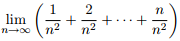
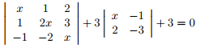
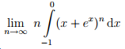

Un punct din oficiu! Fiecare întrebare valorează câte un punct! Mulțimea soluțiilor ecuației z 2=3-4i, z∈ℂ, este: {1,2} {i,2-i} {2-i,-2+i} {3,-2+i} {2-i,3+i}  este: 1⁄ 2 4 1 ∞ 0 Fie punctele A(a,1), B(2,3), C(3,-1). Să se determine a astfel încât punctul A să se afle pe dreapta determinată de punctele B și C. 2 3 5⁄ 2 1⁄ 2 2⁄ 3 Se consideră funcția f(x)=cos 2nx+sin 2nx, n∈ℕ, n>1. Mulțimea soluțiilor ecuației f(x)=1 este: {2kπ|k∈ℤ} {2kπ+ π⁄ 2|k∈ℤ} {kπ+ π⁄ 2|k∈ℤ} {k π⁄ 2|k∈ℤ} ∅ Soluția ecuației x(1-lg5)=lg(2x+x-1) este: x=1⁄5 x=-1 x=1 x=1⁄2 x=-5 este: este: e6 e-1 e-3 e-2 e9 Se consideră ecuația: (sin x+cos x)n-a∙sin x∙cos x + 1 = 0, n∈ℕ, a∈ℝ. Pentru n=2 ecuația are soluție dacă și numai dacă: a∈[2,6] a∈(-∞,-2]∪[6,∞) a∈(2,6) a∈(-1,1] alt răspuns Mulțimea soluțiilor ecuației  este: {-1} {-1,1,-i,i} {-1,0,1-i√3,1+i√3} {-1,1-i√3⁄2,1+i√3⁄2} {-1,1-i⁄2,1+i⁄2}  e 0 ∞ 1+e 12 Refă testul